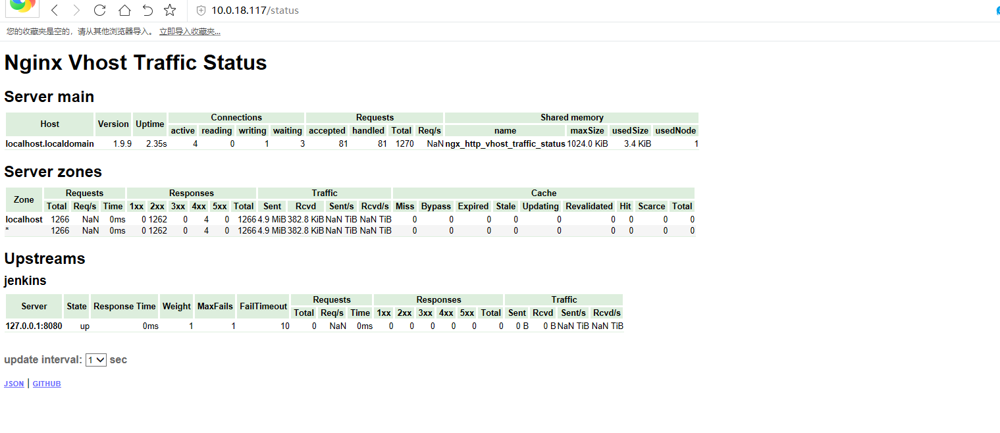
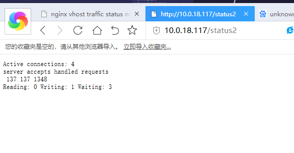
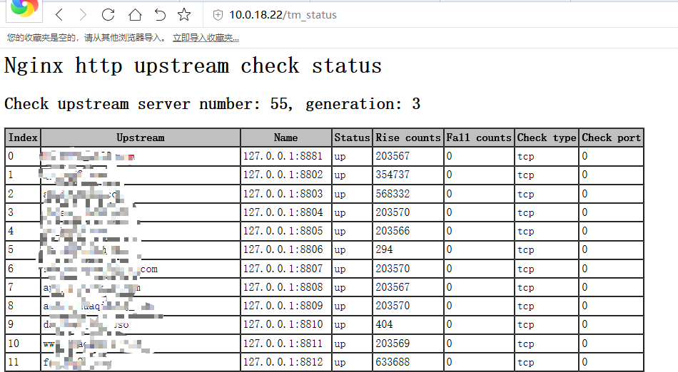

nginx的3个status模块使用
模块说明
nginx-module-vts： https://github.com/vozlt/nginx-module-vts
ngx_http_stub_status_module：自带但默认不构建的。
ngx_http_stub_status_module https://github.com/yaoweibin/nginx_upstream_check_module
安装nginx
http://nginx.org/download/
tar -xf nginx-1.9.9.tar.gz && cd nginx-1.9.9
cd opt/ && git clone git://github.com/vozlt/nginx-module-vts.git
cd opt/ && git clone https://github.com/yaoweibin/nginx_upstream_check_module.git
yum -y install gd-devel gcc gcc-c++ autoconf automake zlib zlib-devel openssl openssl-devel pcre pcre-devel
groupadd -r vuser
useradd -r -g vuser vuser
../configure --user=vuser \
--group=vuser \
--prefix=/data/server/nginx \
--with-http_gzip_static_module \
--with-http_image_filter_module \
--with-http_ssl_module \
--with-http_mp4_module \
--with-http_random_index_module \
--with-http_stub_status_module \
--add-module=/opt/nginx-module-vts \
--add-module=/opt/nginx_upstream_check_module
模块ngx_http_stub_status_module ,默认不构建的，需加上！
文档说明：https://nginx.org/en/docs/http/ngx_http_stub_status_module.html
make && make install
启动nginx
../sbin/nginx -c conf/nginx.conf
../sbin/nginx -s reload
配置 nginx-module-vts
可以参考nginx-module-vts 的wiki，如下图例子：
http {
vhost_traffic_status_zone;
//说明：http段添加此配置
...
server {
...
location /status {
vhost_traffic_status_display;
vhost_traffic_status_display_format html;
}
//说明：在server段中添加该localtion语句
}
}
配置ngx_http_stub_status_module
location /status2
{
stub_status；
check_status;
access_log off;
}
//该模块仅需在server段添加该localtion语句
配置一个upstream
在http端中使用：
include vhosts/*; //先开启虚拟机配置
upstream jenkins //开始反向代理
{
server 127.0.0.1:8080;
#check interval=3000 rise=2 fall=3 timeout=1000 type=tcp;
}
在server端中使用：
location /jenkins
{
proxy_pass http://127.0.0.1:8080;
proxy_set_header Host $host;
proxy_set_header X-Forwarded-For $remote_addr;
}
查看status状态
nginx-module-vts

ngx_http_stub_status_module

为了更客观的查看status2的状态添加了模块：nginx_upstream_check_module 后取消 #check interval=3000 这里的注释即可使用 https://github.com/yaoweibin/nginx_upstream_check_module
location /status2
{
check_status;
access_log off;
}
//该模块仅需在server段添加该localtion语句
如下图展示：
